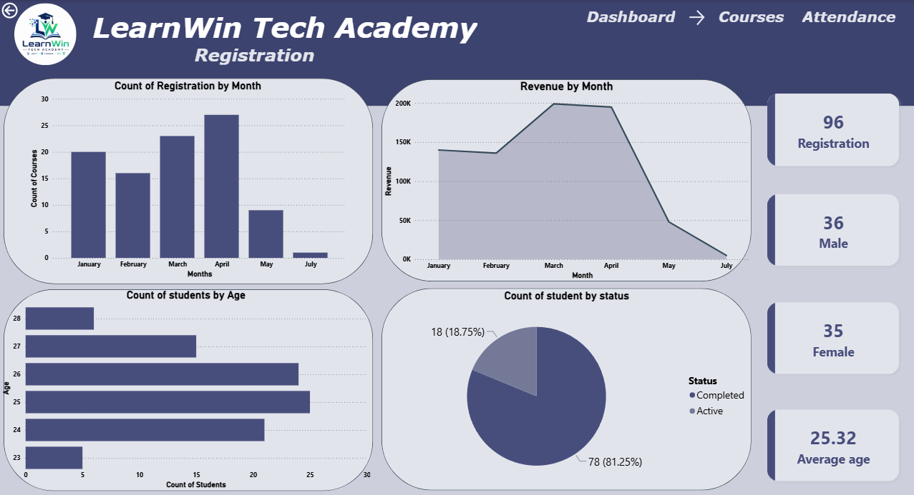
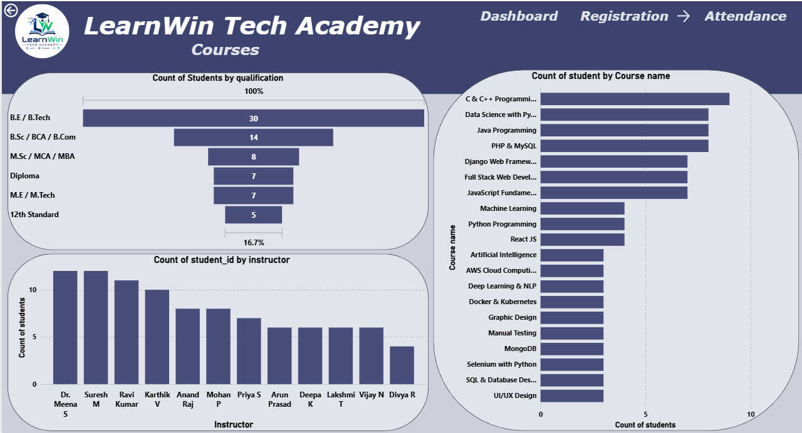
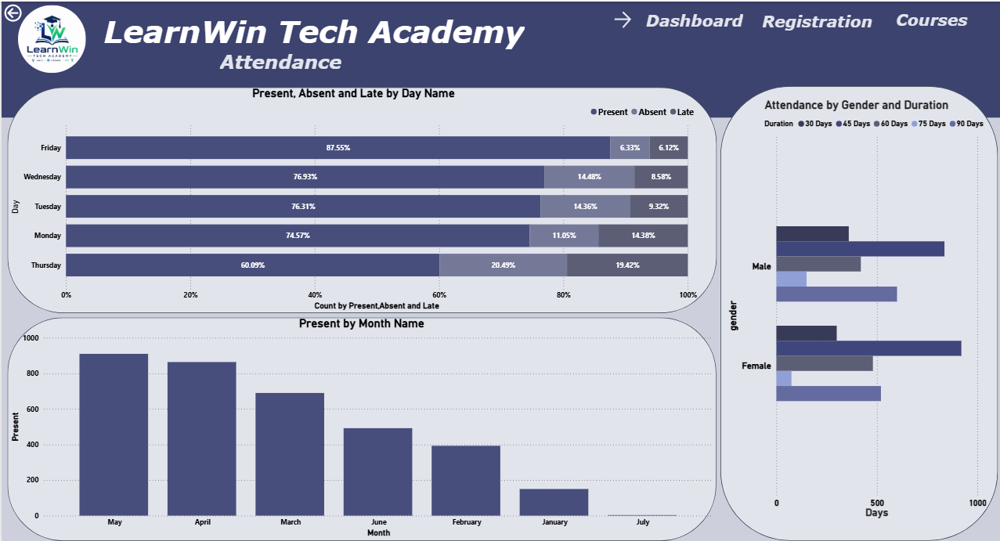

01 / Student Analytics · 2026
AI-Driven Student Data Management & Power BI Dashboard
Web app, MySQL and Power BI that turn student records into academic and business insights.
~40%Manual effort cut
4+Tables designed
Min → secLookup time
🤖
Built an AI-enabled web application to automate student data retrieval, cutting manual record-handling effort by an estimated 40% and reducing lookup time from minutes to seconds.
Demo video
Screenshots




How it works
1. IngestionStudent registration and attendance data are captured through a web interface and stored in a normalized MySQL database.
2. TransformationAutomated SQL triggers validate incoming records and generate derived business data, while analytical SQL views transform transactional data into reporting-ready datasets.
3. ModellingPower BI connects directly to the MySQL database, where Power Query extracts and transforms data before it is loaded into the Power BI data model. A star schema is implemented with attendance as the fact table and students, courses, and date as dimension tables to optimize analytical performance.
4. InsightsBusiness metrics are created using DAX to analyze registrations, attendance, course performance, instructor efficiency, fee collection, student demographics, and at-risk learners. The resulting interactive dashboards provide insights into student registrations, attendance, course performance, instructor efficiency and fee collection to support academic and business decisions.